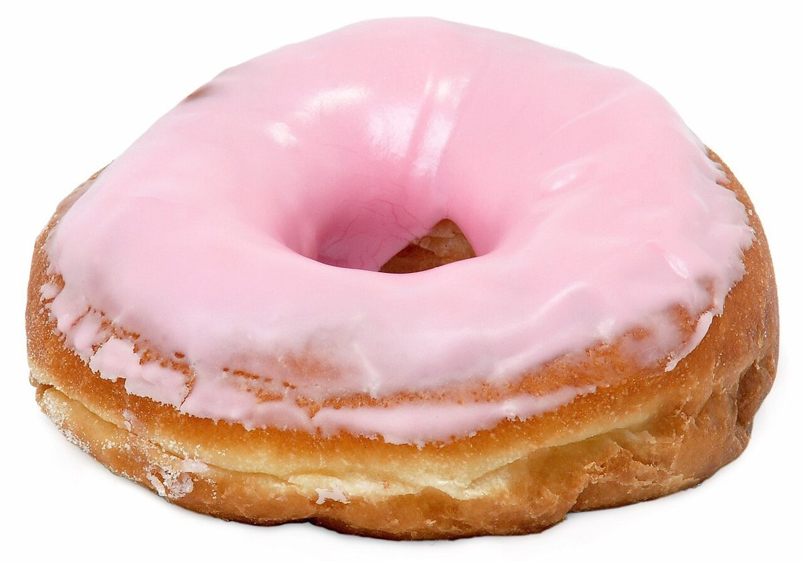
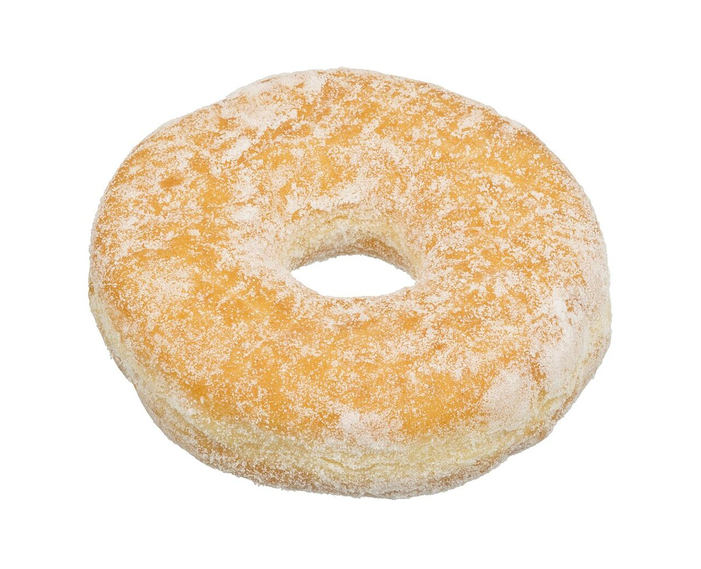

イメージ例
営業時間などが分かったら、行ってみたいです。それまでは、Instagramの更新を楽しみにしています。
VOICE
以下は制作側の創作で、実在のお客様の投稿ではありません。「こんな声が集まるお店になったら」というイメージ例です。

営業時間などが分かったら、行ってみたいです。それまでは、Instagramの更新を楽しみにしています。

Instagramをのぞいてみたいです。投稿が増えたら、いつか足を運べる日を心待ちにしています。

お店のことがもっと分かる日を、のんびり待ちたいです。いつか行ってみたいと思っています。
本物の声は、お店が始まってから。いまはInstagramで最新の様子をご覧ください。